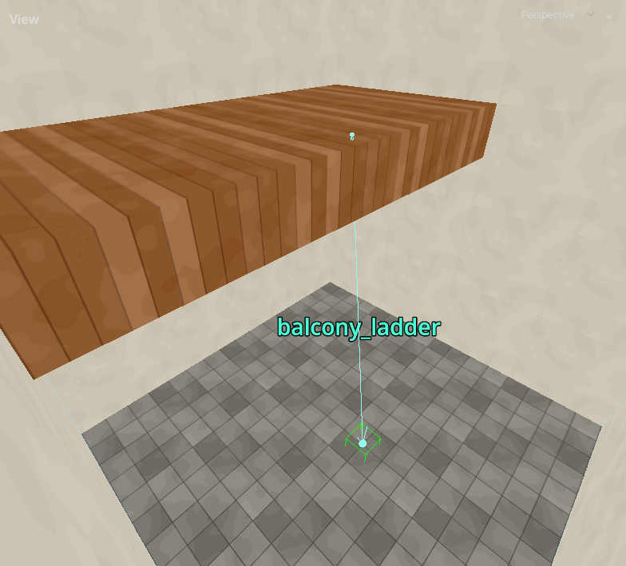
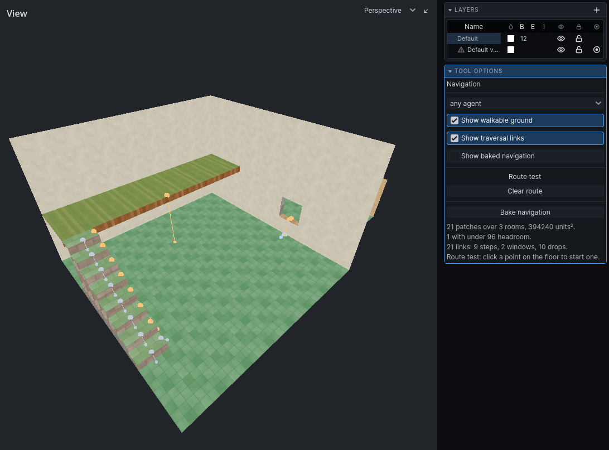

Links
A link is a way between two patches of ground that is not walking. Links are where agents differ: a window a thief climbs through is a wall to a guard.
Links are found by measuring. Each carries what it takes: how high to climb, how far to fall, how wide a gap, how big the opening. Your game's agent profiles decide who can take it and what it costs them. Costs are counted in units of walking: how far out of their way a guard would go to avoid it.
| Kind | What it is | Colour in the tool |
|---|---|---|
| Step | a rise of 18 units or less | grey |
| Window | an opening whose sill stands above the floor on either side | blue |
| Drop | an edge with lower ground beyond it | orange |
| Jump | a gap across open air to ground within reach | purple |
| Authored | a nav_link you placed |
cyan |
Doorways
An ordinary doorway is not a link. Two rooms that abut with floors at the same height join by themselves, and agents walk through.
A doorway whose sill stands more than a unit above the floor on either side is a window, however low. Keep doorway floors level with the rooms they join.
Note: A closed door does not close the route through its doorway. Agents walk up to the door; your game decides whether they open it.
Steps and stairs
A rise of 18 units or less is a step. It costs nothing and goes both ways. A flight of stairs built to 18-unit treads is walking.
An agent whose profile climbs less than a tread still cannot use them.
Windows
An opening with a sill above the floor, on either side, is a window. It can be a different climb from each side: a window into a cellar may be easy to drop through and hard to climb back out of.
An agent that does not fit through the opening, upright, cannot take it.
Drops
The edge of any patch of ground with lower ground beyond it is a drop: a ledge, a balcony, a pit. Drops up to 1024 units are found. Going down is a fall; coming back up is a climb. Each agent's profile says how far it will fall and how high it can climb, so a drop is often one-way.
Jumps
Two patches within 128 units across, and within 96 units of each other in height, with clear air between them, are a jump. Roof to roof, ledge to ledge. Most agents' profiles cannot jump at all.
Water
A drop into water is measured to the water's depth.
- An agent that swims there falls only to the surface, and climbs out from the surface. A pool filled to the brim is no climb at all.
- An agent that wades falls and climbs from the bottom.
Wading and swimming across the water: see Ground.
Ladders and ropes
Geometry cannot say that a mesh is a ladder. Place a nav_link entity for it.
- Choose
nav_linkin the entity browser and place it on the ground at the bottom of the ladder. See Entities. - Set
nav_link_targetto the offset from the entity to the far end. The default,(0, 128, 0), is straight up 128 units. - Set
nav_link_one_wayfor a chute or a hatch that only opens downwards. - Give it a
nav_link_nameif the game switches it on and off: see Named links.
| Property | What it does | Default |
|---|---|---|
nav_link_target |
offset to the far end | (0, 128, 0) |
nav_link_name |
name the game can switch it by | empty |
nav_link_one_way |
only from the entity to the far end | off |
Select the link to see where it goes: a line to its far end, with an arrowhead at each end it can be taken from. A one-way link has one arrowhead. The name shows at the middle of the line. A link with no offset is marked in red and is left out of the bake.
Both ends must be in a room. A link with an end in solid is reported when the ground is built.
Placing a link says it can be climbed. An agent's profile can still refuse it if the agent does not fit.

Named links
A window or hatch can be switched on and off while the game runs: boarded up, then broken open. The game does this by name.
A derived link takes the name of the opening it passes through. Name openings in the Audio Portals tool; see Doors and openings. One name closes an opening to both sound and routes.
A nav_link takes its nav_link_name.
Only links through a named opening, and named nav_links, can be switched. An ordinary doorway cannot.
